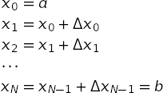
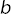
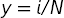
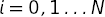
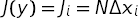
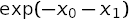

vegas Module¶
Introduction¶
The key Python objects supported by the vegas module are:
vegas.Integrator— an object describing a multidimensional integration operator. Such objects contain information about the integration volume, and also about optimal remappings of the integration variables based upon the last integral evaluated using the object.vegas.AdaptiveMap— an object describing the remappings used byvegas.vegas.RAvg— an object describing the result of avegasintegration.vegasreturns the weighted average of the integral estimates from eachvegasiteration as an object of classvegas.RAvg. These are Gaussian random variables — that is, they have a mean and a standard deviation — but also contain information about the iterationsvegasused in generating the result.vegas.RAvgArray— an array version ofvegas.RAvgused when the integrand is array-valued.vegas.RAvgDict— a dictionary version ofvegas.RAvgused when the integrand is dictionary-valued.vegas.PDFIntegrator— a specialized integrator for evaluating Gaussian expectation values.
These are described in detail below.
Integrator Objects¶
The central component of the vegas package is the integrator class:
-
class
vegas.Integrator¶ Adaptive multidimensional Monte Carlo integration.
vegas.Integratorobjects make Monte Carlo estimates of multidimensional functionsf(x)wherex[d]is a point in the integration volume:integ = vegas.Integrator(integration_region) result = integ(f, nitn=10, neval=10000)
The integator makes
nitnestimates of the integral, each using at mostnevalsamples of the integrand, as it adapts to the specific features of the integrand. Successive estimates (iterations) typically improve in accuracy until the integrator has fully adapted. The integrator returns the weighted average of allnitnestimates, together with an estimate of the statistical (Monte Carlo) uncertainty in that estimate of the integral. The result is an object of typeRAvg(which is derived fromgvar.GVar).Integrands
f(x)return numbers, arrays of numbers (any shape), or dictionaries whose values are numbers or arrays (any shape). Each number returned by an integrand corresponds to a different integrand. When arrays are returned,vegasadapts to the first number in the flattened array. When dictionaries are returned,vegasadapts to the first number in the value corresponding to the first key.vegascan generate integration points in batches for integrands built from classes derived fromvegas.BatchIntegrand, or integrand functions decorated byvegas.batchintegrand(). Batch integrands are typically much faster, especially if they are coded in Cython.vegas.Integrators have a large number of parameters but the only ones that most people will care about are: the numbernitnof iterations of thevegasalgorithm; the maximum numbernevalof integrand evaluations per iteration; and the damping parameteralpha, which is used to slow down the adaptive algorithms when they would otherwise be unstable (e.g., with very peaky integrands). Setting parameteranalyzer=vegas.reporter()is sometimes useful, as well, since it causesvegasto print (onsys.stdout) intermediate results from each iteration, as they are produced. This helps when each iteration takes a long time to complete (e.g., longer than an hour) because it allows you to monitor progress as it is being made (or not).Parameters: - map (array or
vegas.AdaptiveMaporvegas.Integrator) –The integration region as specified by an array
map[d, i]wheredis the direction andi=0,1specify the lower and upper limits of integration in directiond.mapcould also be the integration map from anothervegas.Integrator, or thatvegas.Integratoritself. In this case the grid is copied from the existing integrator. - nitn (positive int) – The maximum number of iterations used to adapt to the integrand and estimate its value. The default value is 10; typical values range from 10 to 20.
- neval (positive int) – The maximum number of integrand evaluations
in each iteration of the
vegasalgorithm. Increasingnevalincreases the precision: statistical errors should fall at least as fast assqrt(1./neval)and often fall much faster. The default value is 1000; real problems often require 10–1000 times more evaluations than this. - alpha (float) – Damping parameter controlling the remapping
of the integration variables as
vegasadapts to the integrand. Smaller values slow adaptation, which may be desirable for difficult integrands. Small or zeroalphas are also sometimes useful after the grid has adapted, to minimize fluctuations away from the optimal grid. The default value is 0.5. - beta (float) – Damping parameter controlling the redistribution
of integrand evaluations across hypercubes in the
stratified sampling of the integral (over transformed
variables). Smaller values limit the amount of
redistribution. The theoretically optimal value is 1;
setting
beta=0prevents any redistribution of evaluations. The default value is 0.75. - adapt (bool) – Setting
adapt=Falseprevents further adaptation byvegas. Typically this would be done after training thevegas.Integratoron an integrand, in order to stabilize further estimates of the integral.vegasuses unweighted averages to combine results from different iterations whenadapt=False. The default setting isadapt=True. - nhcube_batch (positive int) – The number of hypercubes (in y space)
whose integration points are combined into a single
batch to be passed to the integrand, together,
when using
vegasin batch mode. The default value is 1000. Larger values may be lead to faster evaluations, but at the cost of more memory for internal work arrays. - minimize_mem (bool) – When
True,vegasminimizes internal workspace at the cost of extra evaluations of the integrand. This can increase execution time by 50–100% but might be desirable when the number of evaluations is very large (e.g.,neval=1e9). Normallyvegasuses internal work space that grows in proportion toneval. If that work space exceeds the size of the RAM available to the processor,vegasruns much more slowly. Settingminimize_mem=Truegreatly reduces the internal storage used byvegas; in particular memory becomes independent ofneval. The default setting (minimize_mem=False), however, is much superior unless memory becomes a problem. (The large memory is needed for adaptive stratified sampling, so memory is not an issue ifbeta=0.) - adapt_to_errors (bool) –
adapt_to_errors=Falsecausesvegasto remap the integration variables to emphasize regions where|f(x)|is largest. This is the default mode.adapt_to_errors=Truecausesvegasto remap variables to emphasize regions where the Monte Carlo error is largest. This might be superior when the number of the number of stratifications (self.nstrat) in the y grid is large (> 50?). It is typically useful only in one or two dimensions. - maxinc_axis (positive int) – The maximum number of increments per axis allowed for the x-space grid. The default value is 1000; there is probably little need to use other values.
- max_nhcube (positive int) – Maximum number of y-space hypercubes
used for stratified sampling. Setting
max_nhcube=1turns stratified sampling off, which is probably never a good idea. The default setting (1e9) was chosen to correspond to the point where internal work arrays become comparable in size to the typical amount of RAM available to a processor (in a laptop in 2014). Internal memory usage is large only whenbeta>0andminimize_mem=False; thereforemax_nhcubeis ignored ifbeta=0orminimize_mem=True. - max_neval_hcube (positive int) – Maximum number of integrand evaluations
per hypercube in the stratification. The default value
is 1e7. Larger values might allow for more adaptation
(when
nevalis larger than2 * max_neval_hcube), but also can result in very large internal work arrays. - rtol (non-negative float) – Relative error in the integral estimate
at which point the integrator can stop. The default
value is 0.0 which turns off this stopping condition.
This stopping condition can be quite unreliable
in early iterations, before
vegashas converged. Use with caution, if at all. - atol (non-negative float) – Absolute error in the integral estimate
at which point the integrator can stop. The default
value is 0.0 which turns off this stopping condition.
This stopping condition can be quite unreliable
in early iterations, before
vegashas converged. Use with caution, if at all. - analyzer –
An object with methods
analyzer.begin(itn, integrator)analyzer.end(itn_result, result)where:
begin(itn, integrator)is called at the start of eachvegasiteration withitnequal to the iteration number andintegratorequal to the integrator itself; andend(itn_result, result)is called at the end of each iteration withitn_resultequal to the result for that iteration andresultequal to the cummulative result of all iterations so far. Settinganalyzer=vegas.reporter(), for example, causes vegas to print out a running report of its results as they are produced. The default isanalyzer=None. - ran_array_generator – Function that generates
numpyarrays of random numbers distributed uniformly between 0 and 1.ran_array_generator(shape)should create an array whose dimensions are specified by the integer-valued tupleshape. The default generator isnumpy.random.random. - sync_ran – If
True, the default random number generator is synchronized across all processors when using MPI. IfFalse,vegasdoes no synchronization (but the random numbers should synchronized some other way).
vegas.Integratorobjects have attributes for each of these parameters. In addition they have the following methods:-
__call__(fcn, **kargs)¶ Integrate integrand
fcn.A typical integrand has the form, for example:
def f(x): return x[0] ** 2 + x[1] ** 4
The argument
x[d]is an integration point, where indexd=0...represents direction within the integration volume.Integrands can be array-valued, representing multiple integrands: e.g.,
def f(x): return [x[0] ** 2, x[0] / x[1]]
The return arrays can have any shape. Dictionary-valued integrands are also supported: e.g.,
def f(x): return {'a':x[0] ** 2, 'b':[x[0] / x[1], x[1] / x[0]]}
Integrand functions that return arrays or dictionaries are useful for multiple integrands that are closely related, and can lead to substantial reductions in the errors for ratios or differences of the results.
It is usually much faster to use
vegasin batch mode, where integration points are presented to the integrand in batches. A simple batch integrand might be, for example:@vegas.batchintegrand def f(x): return x[:, 0] ** 2 + x[:, 1] ** 4
where decorator
@vegas.batchintegrandtellsvegasthat the integrand processes integration points in batches. The arrayx[i, d]represents a collection of different integration points labeled byi=0.... (The number of points is controlledvegas.Integratorparameternhcube_batch.) The batch index is always first.Batch integrands can also be constructed from classes derived from
vegas.BatchIntegrand.Batch mode is particularly useful (and fast) when the class derived from
vegas.BatchIntegrandis coded in Cython. Then loops over the integration points can be coded explicitly, avoiding the need to usenumpy’s whole-array operators if they are not well suited to the integrand.Any
vegasparameter can also be reset: e.g.,self(fcn, nitn=20, neval=1e6).
-
set(ka={}, **kargs)¶ Reset default parameters in integrator.
Usage is analogous to the constructor for
vegas.Integrator: for example,old_defaults = integ.set(neval=1e6, nitn=20)
resets the default values for
nevalandnitninvegas.Integratorinteg. A dictionary, hereold_defaults, is returned. It can be used to restore the old defaults using, for example:integ.set(old_defaults)
-
settings(ngrid=0)¶ Assemble summary of integrator settings into string.
Parameters: ngrid (int) – Number of grid nodes in each direction to include in summary. The default is 0. Returns: String containing the settings.
-
random(yield_hcube=False, yield_y=False)¶ Iterator over integration points and weights.
This method creates an iterator that returns integration points from
vegas, and their corresponding weights in an integral. Each pointx[d]is accompanied by the weight assigned to that point byvegaswhen estimating an integral. Optionally it will also return the index of the hypercube containing the integration point and/or the y-space coordinates:integ.random() yields x, wgt integ.random(yield_hcube=True) yields x, wgt, hcube integ.random(yield_y=True) yields x, y, wgt integ.random(yield_hcube=True, yield_y=True) yields x, y, wgt, hcube
The number of integration points returned by the iterator corresponds to a single iteration.
-
random_batch(yield_hcube=False, yield_y=False)¶ Iterator over integration points and weights.
This method creates an iterator that returns integration points from
vegas, and their corresponding weights in an integral. The points are provided in arraysx[i, d]wherei=0...labels the integration points in a batch andd=0...labels direction. The corresponding weights assigned byvegasto each point are provided in an arraywgt[i].Optionally the integrator will also return the indices of the hypercubes containing the integration points and/or the y-space coordinates of those points:
integ.random() yields x, wgt integ.random(yield_hcube=True) yields x, wgt, hcube integ.random(yield_y=True) yields x, y, wgt integ.random(yield_hcube=True, yield_y=True) yields x, y, wgt, hcube
The number of integration points returned by the iterator corresponds to a single iteration. The number in a batch is controlled by parameter
nhcube_batch.
- map (array or
AdaptiveMap Objects¶
vegas’s remapping of the integration variables is handled
by a vegas.AdaptiveMap object, which maps the original
integration variables x into new variables y in a unit hypercube.
Each direction has its own map specified by a grid in x space:

where and  are the limits of integration. The grid specifies the transformation function at the points  for :

Linear interpolation is used between those points. The Jacobian for this transformation is:

vegas adjusts the increments sizes to optimize its Monte Carlo
estimates of the integral. This involves training the grid. To
illustrate how this is done with vegas.AdaptiveMaps consider a simple
two dimensional integral over a unit hypercube with integrand:
def f(x):
return x[0] * x[1] ** 2
We want to create a grid that optimizes uniform Monte Carlo estimates
of the integral in y space. We do this by sampling the integrand
at a large number ny of random points y[j, d], where j=0...ny-1
and d=0,1, uniformly distributed throughout the integration
volume in y space. These samples be used to train the grid
using the following code:
import vegas
import numpy as np
def f(x):
return x[0] * x[1] ** 2
m = vegas.AdaptiveMap([[0, 1], [0, 1]], ninc=5)
ny = 1000
y = np.random.uniform(0., 1., (ny, 2)) # 1000 random y's
x = np.empty(y.shape, float) # work space
jac = np.empty(y.shape[0], float)
f2 = np.empty(y.shape[0], float)
print('intial grid:')
print(m.settings())
for itn in range(5): # 5 iterations to adapt
m.map(y, x, jac) # compute x's and jac
for j in range(ny): # compute training data
f2[j] = (jac[j] * f(x[j])) ** 2
m.add_training_data(y, f2) # adapt
m.adapt(alpha=1.5)
print('iteration %d:' % itn)
print(m.settings())
In each of the 5 iterations, the vegas.AdaptiveMap adjusts the
map, making increments smaller where f2 is larger and
larger where f2 is smaller.
The map converges after only 2 or 3 iterations, as
is clear from the output:
initial grid:
grid[ 0] = [ 0. 0.2 0.4 0.6 0.8 1. ]
grid[ 1] = [ 0. 0.2 0.4 0.6 0.8 1. ]
iteration 0:
grid[ 0] = [ 0. 0.412 0.62 0.76 0.883 1. ]
grid[ 1] = [ 0. 0.506 0.691 0.821 0.91 1. ]
iteration 1:
grid[ 0] = [ 0. 0.428 0.63 0.772 0.893 1. ]
grid[ 1] = [ 0. 0.531 0.713 0.832 0.921 1. ]
iteration 2:
grid[ 0] = [ 0. 0.433 0.63 0.772 0.894 1. ]
grid[ 1] = [ 0. 0.533 0.714 0.831 0.922 1. ]
iteration 3:
grid[ 0] = [ 0. 0.435 0.631 0.772 0.894 1. ]
grid[ 1] = [ 0. 0.533 0.715 0.831 0.923 1. ]
iteration 4:
grid[ 0] = [ 0. 0.436 0.631 0.772 0.895 1. ]
grid[ 1] = [ 0. 0.533 0.715 0.831 0.924 1. ]
The grid increments along direction 0 shrink at larger
values x[0], varying as 1/x[0]. Along direction 1
the increments shrink more quickly varying like 1/x[1]**2.
vegas samples the integrand in order to estimate the integral.
It uses those same samples to train its vegas.AdaptiveMap in this
fashion, for use in subsequent iterations of the algorithm.
-
class
vegas.AdaptiveMap¶ Adaptive map
y->x(y)for multidimensionalyandx.An
AdaptiveMapdefines a multidimensional mapy -> x(y)from the unit hypercube, with0 <= y[d] <= 1, to an arbitrary hypercube inxspace. Each direction is mapped independently with a Jacobian that is tunable (i.e., “adaptive”).The map is specified by a grid in
x-space that, by definition, maps into a uniformly spaced grid iny-space. The nodes of the grid are specified bygrid[d, i]where d is the direction (d=0,1...dim-1) andilabels the grid point (i=0,1...N). The mapping for a specific pointyintoxspace is:y[d] -> x[d] = grid[d, i(y[d])] + inc[d, i(y[d])] * delta(y[d])
where
i(y)=floor(y*N),delta(y)=y*N - i(y), andinc[d, i] = grid[d, i+1] - grid[d, i]. The Jacobian for this map,dx[d]/dy[d] = inc[d, i(y[d])] * N,
is piece-wise constant and proportional to the
x-space grid spacing. Each increment in thex-space grid maps into an increment of size1/Nin the correspondingyspace. So regions inxspace whereinc[d, i]is small are stretched out inyspace, while larger increments are compressed.The
xgrid for anAdaptiveMapcan be specified explicitly when the map is created: for example,m = AdaptiveMap([[0, 0.1, 1], [-1, 0, 1]])
creates a two-dimensional map where the
x[0]interval(0,0.1)and(0.1,1)map into they[0]intervals(0,0.5)and(0.5,1)respectively, whilex[1]intervals(-1,0)and(0,1)map intoy[1]intervals(0,0.5)and(0.5,1).More typically an initially uniform map is trained with data
f[j]corresponding tonypointsy[j, d], withj=0...ny-1, uniformly distributed in y space: for example,m.add_training_data(y, f) m.adapt(alpha=1.5)
m.adapt(alpha=1.5)shrinks grid increments wheref[j]is large, and expands them wheref[j]is small. Typically one has to iterate over several sets ofys andfs before the grid has fully adapted.The speed with which the grid adapts is determined by parameter
alpha. Large (positive) values imply rapid adaptation, while small values (much less than one) imply slow adaptation. As in any iterative process, it is usually a good idea to slow adaptation down in order to avoid instabilities.Parameters: - grid – Initial
xgrid, wheregrid[d, i]is thei-th node in directiond. - ninc (
intorNone) – Number of increments along each axis of thexgrid. A new grid is generated ifnincdiffers fromgrid.shape[1]. The new grid is designed to give the same Jacobiandx(y)/dyas the original grid. The default value,ninc=None, leaves the grid unchanged.
-
dim¶ Number of dimensions.
-
ninc¶ Number of increments along each grid axis.
-
grid¶ The nodes of the grid defining the maps are
self.grid[d, i]whered=0...specifies the direction andi=0...self.nincthe node.
-
inc¶ The increment widths of the grid:
self.inc[d, i] = self.grid[d, i + 1] - self.grid[d, i]
-
adapt(alpha=0.0, ninc=None)¶ Adapt grid to accumulated training data.
self.adapt(...)projects the training data onto each axis independently and maps it intoxspace. It shrinksx-grid increments in regions where the projected training data is large, and grows increments where the projected data is small. The grid along any direction is unchanged if the training data is constant along that direction.The number of increments along a direction can be changed by setting parameter
ninc.The grid does not change if no training data has been accumulated, unless
nincis specified, in which case the number of increments is adjusted while preserving the relative density of increments at different values ofx.Parameters: - alpha (double or None) – Determines the speed with which the grid adapts to
training data. Large (postive) values imply rapid evolution;
small values (much less than one) imply slow evolution. Typical
values are of order one. Choosing
alpha<0causes adaptation to the unmodified training data (usually not a good idea). - ninc (int or None) – Number of increments along each direction in the
new grid. The number is unchanged from the old grid if
nincis omitted (or equalsNone).
- alpha (double or None) – Determines the speed with which the grid adapts to
training data. Large (postive) values imply rapid evolution;
small values (much less than one) imply slow evolution. Typical
values are of order one. Choosing
-
add_training_data(y, f, ny=-1)¶ Add training data
ffory-space pointsy.Accumulates training data for later use by
self.adapt(). Grid increments will be made smaller in regions wherefis larger than average, and larger wherefis smaller than average. The grid is unchanged (converged?) whenfis constant across the grid.Parameters: - y (contiguous 2-d array of floats) –
yvalues corresponding to the training data.yis a contiguous 2-d array, wherey[j, d]is for points along directiond. - f (contiguous 2-d array of floats) – Training function values.
f[j]corresponds to pointy[j, d]iny-space. - ny (int) – Number of
ypoints:y[j, d]ford=0...dim-1andj=0...ny-1.nyis set toy.shape[0]if it is omitted (or negative).
- y (contiguous 2-d array of floats) –
-
__call__(y)¶ Return
xvalues corresponding toy.ycan be a singledim-dimensional point, or it can be an arrayy[i,j, ..., d]of such points (d=0..dim-1).If
y=None(default),yis set equal to a (uniform) random point in the volume.
-
jac(y)¶ Return the map’s Jacobian at
y.ycan be a singledim-dimensional point, or it can be an arrayy[d,i,j,...]of such points (d=0..dim-1).
-
make_uniform(ninc=None)¶ Replace the grid with a uniform grid.
The new grid has
nincincrements along each direction ifnincis specified. Otherwise it has the same number of increments as the old grid.
-
map(y, x, jac, ny=-1)¶ Map y to x, where jac is the Jacobian.
y[j, d]is an array ofnyy-values for directiond.x[j, d]is filled with the correspondingxvalues, andjac[j]is filled with the corresponding Jacobian values.xandjacmust be preallocated: for example,x = numpy.empty(y.shape, numpy.float_) jac = numpy.empty(y.shape[0], numpy.float_)
Parameters: - y (contiguous 2-d array of floats) –
yvalues to be mapped.yis a contiguous 2-d array, wherey[j, d]contains values for points along directiond. - x (contiguous 2-d array of floats) – Container for
xvalues corresponding toy. - jac (contiguous 1-d array of floats) – Container for Jacobian values corresponding to
y. - ny (int) – Number of
ypoints:y[j, d]ford=0...dim-1andj=0...ny-1.nyis set toy.shape[0]if it is omitted (or negative).
- y (contiguous 2-d array of floats) –
-
show_grid(ngrid=40, shrink=False)¶ Display plots showing the current grid.
Parameters: - ngrid (int) – The number of grid nodes in each direction to include in the plot. The default is 40.
- axes – List of pairs of directions to use in
different views of the grid. Using
Nonein place of a direction plots the grid for only one direction. Omittingaxescauses a default set of pairings to be used. - shrink – Display entire range of each axis
if
False; otherwise shrink range to include just the nodes being displayed. The default isFalse.
-
settings(ngrid=5)¶ Create string with information about grid nodes.
Creates a string containing the locations of the nodes in the map grid for each direction. Parameter
ngridspecifies the maximum number of nodes to print (spread evenly over the grid).
- grid – Initial
PDFIntegrator Objects¶
Expectation values using probability density functions defined by
collections of Gaussian random variables (see gvar)
can be evaluated using the following
specialized integrator:
-
class
vegas.PDFIntegrator(g, limit=1e15, scale=1., svdcut=1e-15)¶ vegasintegrator for PDF expectation values.PDFIntegrator(g)is avegasintegrator that evaluates expectation values for the multi-dimensional Gaussian distribution specified by withg, which is agvar.GVaror an array ofgvar.GVars or a dictionary whose values aregvar.GVars or arrays ofgvar.GVars.PDFIntegratorintegrates over the entire parameter space of the distribution but reexpresses integrals in terms of variables that diagonalizeg’s covariance matrix and are centered at its mean value. This greatly facilitates integration over these variables using thevegasmodule, making integrals over 10s or more of parameters feasible.A simple illustration of
PDFIntegratoris given by the following code:import vegas import gvar as gv # multi-dimensional Gaussian distribution g = gv.BufferDict() g['a'] = gv.gvar([0., 1.], [[1., 0.9], [0.9, 1.]]) g['b'] = gv.gvar('1(1)') # integrator for expectation values in distribution g g_expval = vegas.PDFIntegrator(g) # want expectation value of [fp, fp**2] def f_f2(p): fp = p['a'][0] * p['a'][1] + p['b'] return [fp, fp ** 2] # adapt integrator to f_f2 warmup = g_expval(f_f2, neval=1000, nitn=5) # <f_f2> in distribution g results = g_expval(f_f2, neval=1000, nitn=5, adapt=False) print(results.summary()) print('results =', results, '\n') # mean and standard deviation of f(p)'s distribution fmean = results[0] fsdev = gv.sqrt(results[1] - results[0] ** 2) print ('f.mean =', fmean, ' f.sdev =', fsdev) print ("Gaussian approx'n for f(g) =", f_f2(g)[0])
where the
warmupcalls to the integrator are used to adapt it to the integrand, and the final results are inresults. Herenevalis the (approximate) number of function calls per iteration of thevegasalgorithm andnitnis the number of iterations. We use the integrator to calculated the expectation value offpandfp**2, so we can compute the standard deviation for the distribution offps. The output from this code shows that the Gaussian approximation (1.0(1.4)) for the mean and standard deviation of thefpdistribution is not particularly accurate here (correct value is 1.9(2.0)), because of the large uncertainties ing:itn integral average chi2/dof Q ------------------------------------------------------- 1 1.893(38) 1.893(38) 0.00 1.00 2 1.905(35) 1.899(26) 0.25 0.78 3 1.854(41) 1.884(22) 0.47 0.76 4 1.921(36) 1.893(19) 0.44 0.85 5 1.913(37) 1.897(17) 0.35 0.94 results = [1.897(17) 7.48(10)] f.mean = 1.897(17) f.sdev = 1.969(21) Gaussian approx'n for f(g) = 1.0(1.4)
In general functions being integrated can return a number, or an array of numbers, or a dictionary whose values are numbers or arrays of numbers. This allows multiple expectation values to be evaluated simultaneously.
See the documentation with the
vegasmodule for more details on its use, and on the attributes and methods associated with integrators. The example above setsadapt=Falsewhen computing final results. This gives more reliable error estimates whennevalis small. Note thatnevalmay need to be much larger (tens or hundreds of thousands) for more difficult high-dimension integrals.Parameters: - g –
gvar.GVar, array ofgvar.GVars, or dictionary whose values aregvar.GVars or arrays ofgvar.GVars that specifies the multi-dimensional Gaussian distribution used to construct the probability density function. - limit (positive float) – Limits the integrations to a finite
region of size
limittimes the standard deviation on either side of the mean. This can be useful if the functions being integrated misbehave for large parameter values (e.g.,numpy.expoverflows for a large range of arguments). Default is1e15. - scale (positive float) – The integration variables are
rescaled to emphasize parameter values of order
scaletimes the standard deviation. The rescaling does not change the value of the integral but it can reduce uncertainties in thevegasestimate. Default is1.0. - svdcut (non-negative float or None) – If not
None, replace covariance matrix ofgwith a new matrix whose small eigenvalues are modified: eigenvalues smaller thansvdcuttimes the maximum eigenvalueeig_maxare replaced bysvdcut*eig_max. This can ameliorate problems caused by roundoff errors when inverting the covariance matrix. It increases the uncertainty associated with the modified eigenvalues and so is conservative. Settingsvdcut=Noneorsvdcut=0leaves the covariance matrix unchanged. Default is1e-15.
-
__call__(f, nopdf=False, **kargs)¶ Estimate expectation value of function
f(p).Uses module
vegasto estimate the integral off(p)multiplied by the probability density function associated withg(i.e.,pdf(p)). The probability density function is omitted ifnopdf=True(default setting isFalse).Parameters: - f (function) – Function
f(p)to integrate. Integral is the expectation value of the function with respect to the distribution. The function can return a number, an array of numbers, or a dictionary whose values are numbers or arrays of numbers. - nopdf (bool) – If
Truedrop the probability density function from the integrand (so no longer an expectation value). This is useful if one wants to use the optimized integrator for something other than a standard expectation value (e.g., an expectation value with a non-Gaussian PDF). Default isFalse.
All other keyword arguments are passed on to a
vegasintegrator; see thevegasdocumentation for further information.- f (function) – Function
- g –
Other Objects and Functions¶
-
class
vegas.RAvg¶ Running average of scalar-valued Monte Carlo estimates.
This class accumulates independent Monte Carlo estimates (e.g., of an integral) and combines them into a single average. It is derived from
gvar.GVar(from thegvarmodule if it is present) and represents a Gaussian random variable.Different estimates are weighted by their inverse variances if parameter
weight=True; otherwise straight, unweighted averages are used.-
mean¶ The mean value of the weighted average.
-
sdev¶ The standard deviation of the weighted average.
-
chi2¶ chi**2 of weighted average.
-
dof¶ Number of degrees of freedom in weighted average.
-
Q¶ Q or p-value of weighted average’s chi**2.
-
itn_results¶ A list of the results from each iteration.
-
add(g)¶ Add estimate
gto the running average.
-
-
class
vegas.RAvgArray¶ Running average of array-valued Monte Carlo estimates.
This class accumulates independent arrays of Monte Carlo estimates (e.g., of an integral) and combines them into an array of averages. It is derived from
numpy.ndarray. The array elements aregvar.GVars (from thegvarmodule if present) and represent Gaussian random variables.Different estimates are weighted by their inverse covariance matrices if parameter
weight=True; otherwise straight, unweighted averages are used.-
chi2¶ chi**2 of weighted average.
-
dof¶ Number of degrees of freedom in weighted average.
-
Q¶ Q or p-value of weighted average’s chi**2.
-
itn_results¶ A list of the results from each iteration.
-
add(g)¶ Add estimate
gto the running average.
-
summary(extended=False, weighted=None)¶ Assemble summary of results, iteration-by-iteration, into a string.
Parameters: - extended (bool) – Include a table of final averages for every
component of the integrand if
True. Default isFalse. - weighted (bool) – Display weighted averages of results from different
iterations if
True; otherwise show unweighted averages. Default behavior is determined byvegas.
- extended (bool) – Include a table of final averages for every
component of the integrand if
-
-
class
vegas.RAvgDict¶ Running average of dictionary-valued Monte Carlo estimates.
This class accumulates independent dictionaries of Monte Carlo estimates (e.g., of an integral) and combines them into a dictionary of averages. It is derived from
gvar.BufferDict. The dictionary values aregvar.GVars or arrays ofgvar.GVars.Different estimates are weighted by their inverse covariance matrices if parameter
weight=True; otherwise straight, unweighted averages are used.-
chi2¶ chi**2 of weighted average.
-
dof¶ Number of degrees of freedom in weighted average.
-
Q¶ Q or p-value of weighted average’s chi**2.
-
itn_results¶ A list of the results from each iteration.
-
add(g)¶
-
summary(extended=False, weighted=None)¶ Assemble summary of results, iteration-by-iteration, into a string.
Parameters: - extended (bool) – Include a table of final averages for every
component of the integrand if
True. Default isFalse. - weighted (bool) – Display weighted averages of results from different
iterations if
True; otherwise show unweighted averages. Default behavior is determined byvegas.
- extended (bool) – Include a table of final averages for every
component of the integrand if
-
-
vegas.batchintegrand()¶ Decorator for batch integrand functions.
Applying
vegas.batchintegrand()to a functionfcnrepackages the function in a format thatvegascan understand. Appropriate functions take anumpyarray of integration pointsx[i, d]as an argument, wherei=0...labels the integration point andd=0...labels direction, and return an arrayf[i]of integrand values (or arrays of integrand values) for the corresponding points. The meaning offcn(x)is unchanged by the decorator.An example is
import vegas import numpy as np @vegas.batchintegrand def f(x): return np.exp(-x[:, 0] - x[:, 1])
for the two-dimensional integrand .
This decorator provides an alternative to deriving an integrand class from
vegas.BatchIntegrand.
-
class
vegas.BatchIntegrand¶ Base class for classes providing batch integrands.
A class derived from
vegas.BatchIntegrandwill normally provide a__call__(self, x)method that returns an arrayfwhere:x[i, d]is a contiguousnumpyarray wherei=0...labels different integrtion points andd=0...labels different directions in the integration space.f[i]is a contiguous array containing the integrand values corresponding to the integration pointsx[i, :].f[i]is either a number, for a single integrand, or an array (of any shape) for multiple integrands (i.e., an array-valued integrand).An example is
import vegas import numpy as np class batchf(vegas.BatchIntegrand): def __call__(x): return np.exp(-x[:, 0] - x[:, 1]) f = batchf() # the integrand
for the two-dimensional integrand .
Deriving from
vegas.BatchIntegrandis the easiest way to construct integrands in Cython, and gives the fastest results.